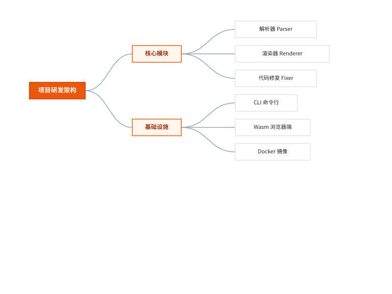
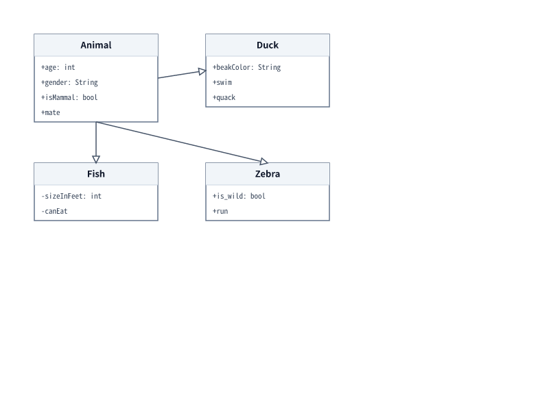
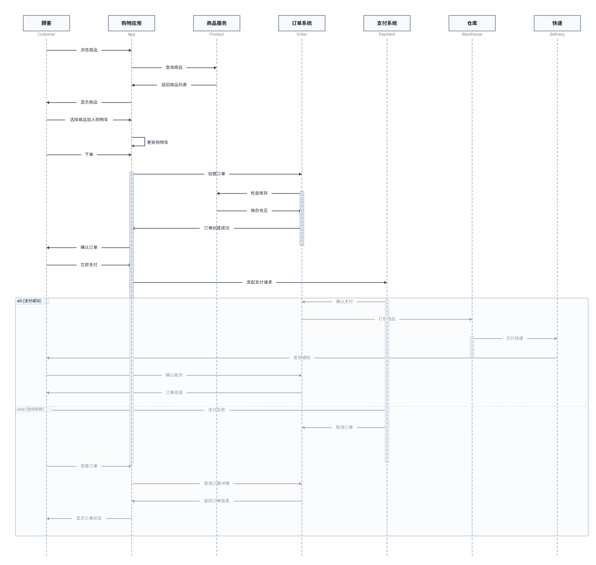
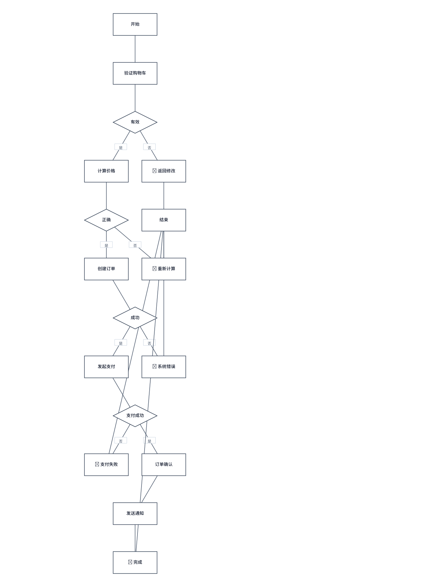
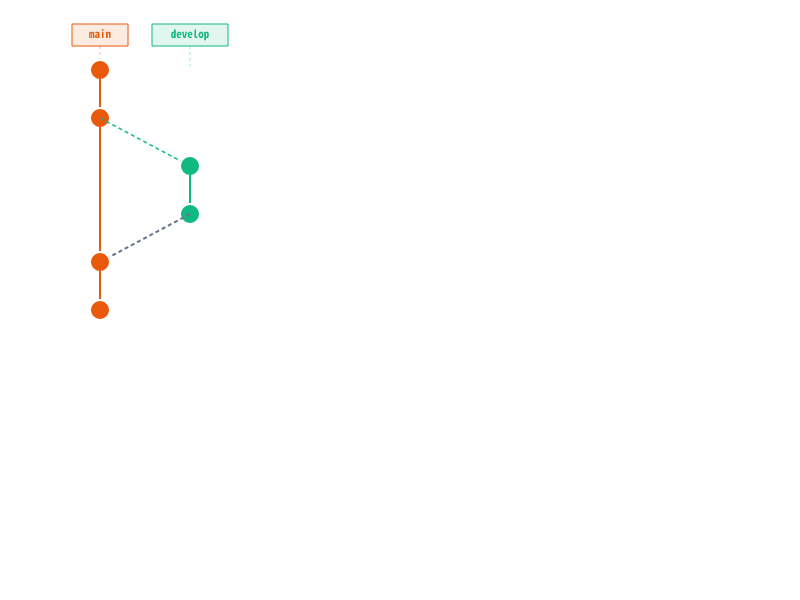
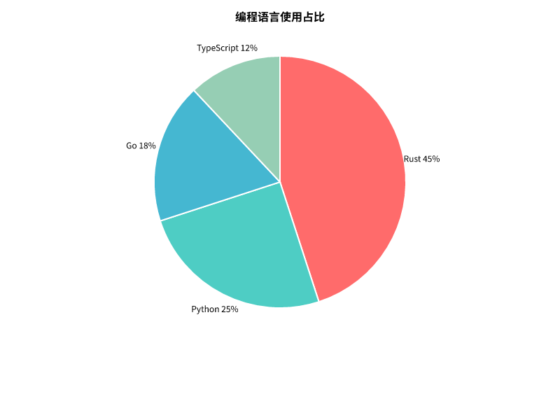

告别庞大迟钝的 Headless Chrome 与动辄上百兆的 npm 运行环境。 基于纯 Rust 架构，实现毫秒级 AST 语法分析、像素级防穿模现代布局，原生直出 SVG、高清 PNG 与高保真矢量 PDF。
与基于 Puppeteer / Chromium 的传统官方 NodeJS CLI 进行全方位实测对比，速度与内存占用呈现出质的飞跃。
| 评测指标 | mermaid-cli (本项目 / 纯 Rust) | 传统 @mermaid-js/mermaid-cli (Node.js) | 核心收益 |
|---|---|---|---|
| 单图渲染冷启动耗时 | 12 ~ 15 ms | 1,750 ~ 2,200 ms | 提升 100x ~ 150x 极速体验 |
| 运行时内存峰值 | ~ 14 MB | ~ 380 MB+ | 节省 96% 宿主硬件开销 |
| 环境依赖与前置条件 | 零依赖 (Single Binary) | Node.js 18+ & Headless Chromium | 避免 CI/CD 环境安装浏览器超时与崩溃 |
| 安装分发包体积 | ~ 18 MB | 450 MB+ (含浏览器二进制) | 容器镜像精简 95% |
| 原生导出格式 | SVG, PNG, PDF, JSON AST | SVG, PNG, PDF | 支持直接派生 AST 用于二次开发 |
| 语法拼写智能修复 | 内置 Fixer 引擎 (自动纠偏) | 不支持 (报错中断) | 宽容修复 `grpah` / 漏掉的 `end` 等拼写错误 |
针对不同图表类型定制专属排布策略：严守时序与 Git DAG 的不可变拓扑，同时在思维导图、类图与流程图中引入平滑贝塞尔曲线、微圆角卡片与防穿模边缘停靠。






从 CLI 本地批处理到云原生 CI/CD 流水线，再到浏览器纯前端交互，全面覆盖多端诉求。
基于纯 Rust 打造的多线程渲染管线，支持单条命令批量渲染整个工程的上百个 Markdown/MMD 文件，性能澎湃。
内置智能容错修复引擎，遇到常见笔误（例如手滑写成 `grpah`、`seqeunce`、漏写 `end` 等）自动纠偏并提示修正方案。
原生嵌入 usvg/resvg 高精度光栅化引擎并支持 CJK 中文字体智能回退，告别 Linux 无头环境文字丢失乱码困扰。
提供官方 `@hao430/mermaid-cli` WASM 模块，纯前端静态页面即可直接在浏览器内编译执行，零网络延迟与零服务器成本。
支持通过 `--json` 或 `parse()` 直接提取语法抽象树（AST），便于对接 IDE 插件、Linter、自研绘图器与文档引擎。
提供单可执行文件，无论是 Linux x86_64、ARM64 还是 macOS、Windows，下载即用，无需预装庞大的 Node 运行时。
极简指令设计，兼容常用 Mermaid CLI 参数习惯，无缝迁移现有文档流水线。